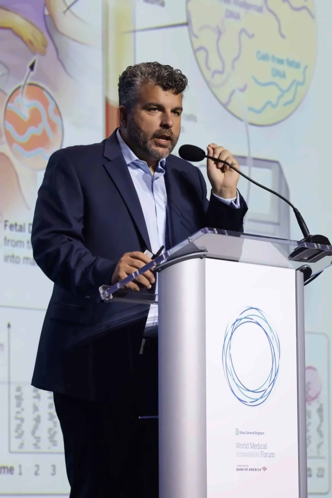

A single blood draw. No procedure risk to mother or fetus.
01
CLIP: BLOOD DRAWWatermarked placeholder, pending license
Non-invasive fetal sequencing
The first fetal sequencing test to deliver comprehensive genetic screening at NIPT scale, with no invasive procedure.
FGI's Approach
Non-invasive testing misses most clinically relevant conditions. Invasive testing catches them, but carries real risk.
NIFS
A single blood draw. No procedure risk to mother or fetus.
The sample is processed and prepared for sequencing within hours of collection.
Millions of data points resolve into a clear genomic result.
Our Mission
Publication · NEJM
Clinical · Validation
Partners · Laboratories

Founders
Three physician-scientists from Harvard, Columbia, and the Broad Institute.
Frequently Asked Questions
Draft answer, pending review. A short, plain-language explanation of how NIFS reads fetal DNA from a maternal blood sample.
Draft answer, pending review. NIPT screens for a handful of chromosomal conditions; NIFS is designed to look across many more genes from the same kind of sample.
Draft answer, pending review. The test uses a standard maternal blood draw, with no procedure that reaches the fetus.
Draft answer, pending review. Availability follows the prospective validation studies and laboratory partnerships now under way.
Draft answer, pending review. Use the laboratory partnership link in the footer and the team will follow up.
Draft answer, pending review. The platform's peer-reviewed work begins with the NEJM paper linked under Research.